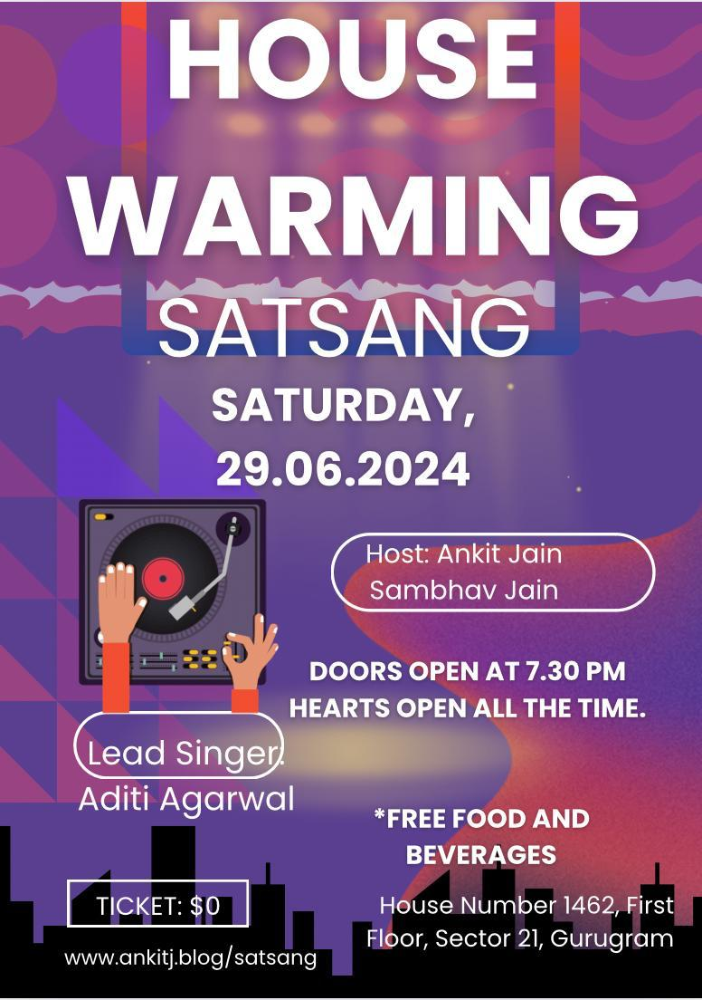

If you've reached this page, its probably from the lovely poster me and my flatmate (who also happens to be my best friend) created. This 29th June, the year of our lord 2024, Sambhav and I are hosting a musical evening, a spirtual get together at our new place in Gurugram. The doors open at 7.30 PM but our hearts are open all the time.
The place is small but our hearts are way too big or atleast we pretend it that way. In either case, the good news is that it will be a fun-filled evening of music, devotional songs, followed by snacks of our choice.
I first attended a satsang at Aditi's center in sector 25, DLF Phase 2 and since then I realised I enjoy it quite a bit. So naturally, I asked Aditi to help me organise this and take the lead on singing, because if I sing, I'm sure you won't find the heart big anymore. Aditi was kind enough to accept and now she will be leading the satsang.
Spoiler alert! It's not a concert and though I mention that Aditi will be singing and leading it - it's us who will add the devotion and sing all along. If anyone who knows how to play an instrument, please feel free to bring it.
